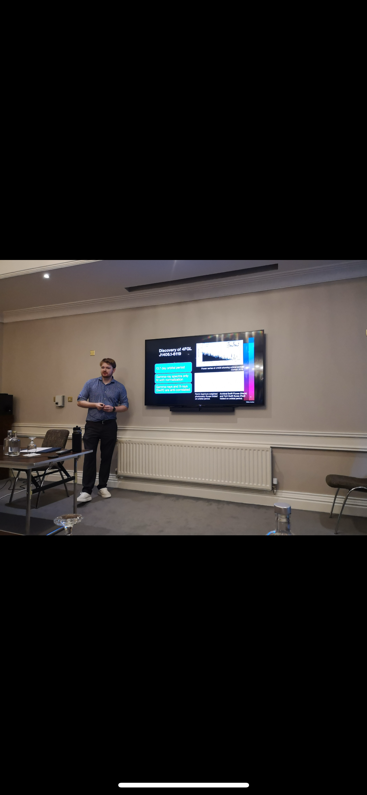

Welcome! I'm an astrophysicist and a data scientist focused on astrophysics, data analysis, and building tools for high-energy astronomy and beyond.
I focus on high-energy astrophysical phenomena related to compact objects.
Peer-reviewed publications:
Interactive graphics and animated figures from my astrophysics research.

GitHub: @aplangrangian
Email: alexlange@gwu.edu